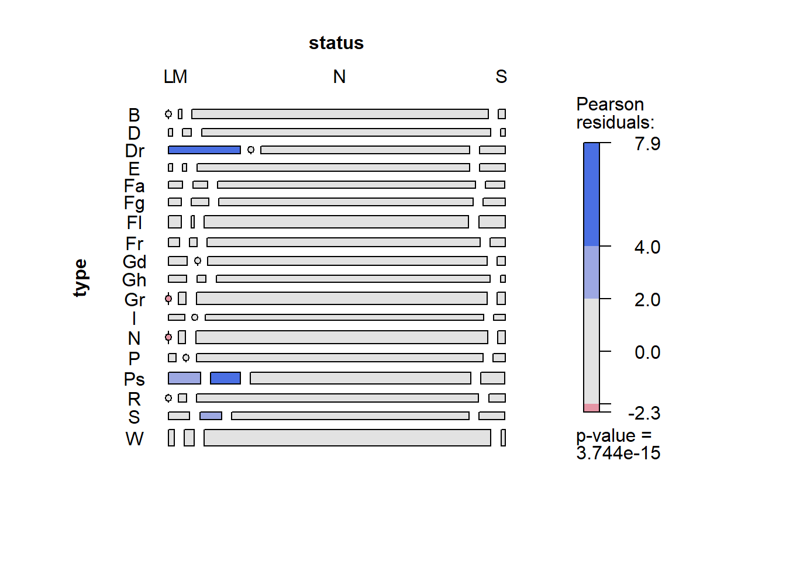

We already know from the previous tasks that average stat totals differ between the types. This time, we want to statistically show how significant that difference is.
For this task, since my explanatory variable is categorical and my response variable is numeric, I am going to perform an ANOVA.
type_vs_stat<- lm(total_points ~ type, data = predict_type )
summary(type_vs_stat)##
## Call:
## lm(formula = total_points ~ type, data = predict_type)
##
## Residuals:
## Min 1Q Median 3Q Max
## -294.39 -98.09 15.22 76.91 706.91
##
## Coefficients:
## Estimate Std. Error t value Pr(>|t|)
## (Intercept) 383.86 12.49 30.726 < 2e-16 ***
## typeDark 64.20 18.89 3.399 0.000693 ***
## typeDragon 155.53 18.74 8.300 2.24e-16 ***
## typeElectric 63.73 18.74 3.401 0.000689 ***
## typeFairy 56.95 19.47 2.925 0.003490 **
## typeFighting 92.66 18.89 4.906 1.03e-06 ***
## typeFire 78.47 18.09 4.337 1.54e-05 ***
## typeFlying 67.65 16.62 4.071 4.92e-05 ***
## typeGhost 65.42 19.21 3.406 0.000676 ***
## typeGrass 33.24 16.62 2.000 0.045646 *
## typeGround 56.43 18.21 3.099 0.001978 **
## typeIce 74.14 20.28 3.655 0.000266 ***
## typeNormal 20.92 16.36 1.279 0.201054
## typePoison 34.24 18.40 1.861 0.062962 .
## typePsychic 98.89 16.71 5.917 4.02e-09 ***
## typeRock 63.49 18.53 3.426 0.000628 ***
## typeSteel 106.13 18.81 5.641 2.00e-08 ***
## typeWater 45.84 15.74 2.911 0.003650 **
## ---
## Signif. codes: 0 '***' 0.001 '**' 0.01 '*' 0.05 '.' 0.1 ' ' 1
##
## Residual standard error: 118.5 on 1552 degrees of freedom
## Multiple R-squared: 0.07562, Adjusted R-squared: 0.0655
## F-statistic: 7.469 on 17 and 1552 DF, p-value: < 2.2e-16anova(type_vs_stat)## Analysis of Variance Table
##
## Response: total_points
## Df Sum Sq Mean Sq F value Pr(>F)
## type 17 1783456 104909 7.4687 < 2.2e-16 ***
## Residuals 1552 21800142 14046
## ---
## Signif. codes: 0 '***' 0.001 '**' 0.01 '*' 0.05 '.' 0.1 ' ' 1library(car)
Anova(type_vs_stat, type = 3)## Anova Table (Type III tests)
##
## Response: total_points
## Sum Sq Df F value Pr(>F)
## (Intercept) 13261058 1 944.0839 < 2.2e-16 ***
## type 1783456 17 7.4687 < 2.2e-16 ***
## Residuals 21800142 1552
## ---
## Signif. codes: 0 '***' 0.001 '**' 0.01 '*' 0.05 '.' 0.1 ' ' 1Unsurprisingly, according to this table, there is a significant positive relationship between typing and stat total.
Again, although we were able to visualize the difference between mono-types and dual-types, we now want to examine how correlated number of types and total points are using ANOVA.
We will use one of the older data frame (pokemon_dual_comparison) to examine this question because the type number variable was already turned into a categorical variable.
pokemon_dual_comparison_fit<-lm(total_points~ type_number, data = pokemon_dual_comparison)
summary(pokemon_dual_comparison_fit)##
## Call:
## lm(formula = total_points ~ type_number, data = pokemon_dual_comparison)
##
## Residuals:
## Min 1Q Median 3Q Max
## -276.60 -100.77 13.40 76.23 663.40
##
## Coefficients:
## Estimate Std. Error t value Pr(>|t|)
## (Intercept) 410.772 5.400 76.070 < 2e-16 ***
## type_number2 50.832 7.437 6.835 1.4e-11 ***
## ---
## Signif. codes: 0 '***' 0.001 '**' 0.01 '*' 0.05 '.' 0.1 ' ' 1
##
## Residual standard error: 119 on 1026 degrees of freedom
## Multiple R-squared: 0.04355, Adjusted R-squared: 0.04262
## F-statistic: 46.72 on 1 and 1026 DF, p-value: 1.403e-11anova(pokemon_dual_comparison_fit)## Analysis of Variance Table
##
## Response: total_points
## Df Sum Sq Mean Sq F value Pr(>F)
## type_number 1 662082 662082 46.719 1.403e-11 ***
## Residuals 1026 14539931 14171
## ---
## Signif. codes: 0 '***' 0.001 '**' 0.01 '*' 0.05 '.' 0.1 ' ' 1Like we saw in the box plots earlier, there is a statistically significant difference between mono-type and dual-type total stat points.
Before getting started, it is important to understand what the status variable in this data set represents. There are 4 statuses: legendary, sub-legendary, mythical, and normal. Legendary Pokemon and sub-legendary, are typically very rare and powerful Pokemon that usually represent certain philosophical, mythical, or cultural ideas. Mythical Pokemon, which are a similar category of special Pokemon, are considered to be more elusive and mysterious than their legendary counterparts. Because of their rarity and power, these Pokemon are often restricted to some extent in competitive gameplay. Although fans of the game might disagree with the specific categories listed above or where Pokemon might belong, the four statuses we are working with in this data set were created using serebii.net’s understanding of status. For more information checkout this link: https://www.serebii.net/pokemon/legendary.shtml
In order to accomplish this task, a mosaic plot is needed. This will allow us to visualize the relationship between two or more categorical variables:
#View all the categories in status
table(pokemon_data_full$status)##
## Legendary Mythical Normal Sub Legendary
## 39 29 915 45# Create dataframe that counts both types
pokemon_special1<- data.frame(pokemon_data_full[,c(10,7)])
pokemon_special2<- data.frame(pokemon_data_full[,c(11,7)])
names(pokemon_special1)[names(pokemon_special1) == "type_1"]<- "type"
names(pokemon_special2)[names(pokemon_special2) == "type_2"]<- "type"
pokemon_special<- rbind(pokemon_special1, pokemon_special2)
#Eliminate blanks
pokemon_special<- data.frame(pokemon_special[pokemon_special$type != "",])
str(pokemon_special)## 'data.frame': 1570 obs. of 2 variables:
## $ type : chr "Grass" "Grass" "Grass" "Grass" ...
## $ status: chr "Normal" "Normal" "Normal" "Normal" ...#Rename types so the figure isn't too crowded
library(dplyr)
pokemon_special <- pokemon_special %>%
mutate(type = dplyr::recode(type,
"Bug" = "B",
"Dark" = "D",
"Dragon" = "Dr",
"Electric" = "E",
"Fairy" = "Fa",
"Fire" = "Fr",
"Fighting" = "Fg",
"Flying" = "Fl",
"Grass" = "Gr",
"Ghost" = "Gh",
"Ground" = "Gd",
"Ice" = "I",
"Normal" = "N",
"Poison" = "P",
"Water" = "W",
"Psychic" = "Ps",
"Rock" = "R",
"Steel" = "S"))
pokemon_special <- pokemon_special %>%
mutate(status = dplyr::recode(status,
"Lengendary" = "L",
"Mythical" = "M",
"Normal"= "N",
"Legendary" = "L",
"Sub Legendary" = "S"))
#Mosiac Plot
library(vcd)
tbl_status<- xtabs(~ type + status, pokemon_special)
ftable(tbl_status)## status L M N S
## type
## B 0 1 87 2
## D 1 2 66 1
## Dr 17 0 49 6
## E 1 1 64 6
## Fa 3 3 53 4
## Fg 3 4 58 5
## Fl 5 1 101 10
## Fr 3 2 73 4
## Gd 5 0 73 2
## Gh 4 2 59 1
## Gr 0 3 111 3
## I 3 0 50 2
## N 0 3 120 3
## P 2 0 72 3
## Ps 12 11 82 9
## R 0 2 69 4
## S 5 5 55 6
## W 3 5 143 2mosaic(tbl_status, labeling_args = list(rot_labels = c(top = 0, left = 0),
offset_varnames = c(top = 1, left = 2), offset_labels = c(left = 0.5, top =0.5)),
spacing = spacing_increase(start = unit(0.45, "lines"), rate = 1),
margins = c(top = 0.25, bottom = 0.5),
gp = shading_hcl,
legend = T)
The rectangles represent the amount of Pokemon that fit a particular type and status. The larger the area of the rectangle, the more Pokemon are in it. If there are no Pokemon that fit a particular criteria, the rectangle is represented as a line with a circle at its center. For example, if we look at the top left corner, there are no bug Pokemon that are legendary.
The Pearson residual colors, essentially, tell us whether we have more or less Pokemon than expected. Blue indicates more than expected while red represents less. If we were to assume that status and typing are independent (as in there is no relationship), then a rectangle should be grey.
Because there are 18 types and 4 status categories, the cells have been condensed for organizational purposes. Luckily for us, there are only a few types that diverge from our independency expectations: dragon type, psychic type, grass type, normal type, and steel type. Unsurprisingly, there are more legendary dragons, relatively speaking, than we would expect if typing and status were independent of each other. With 17 legendary dragon Pokemon out of a possible 72, there is a slim chance that this isn’t an example of an interaction between type and status. Similarly, there is a relatively large amount of legendary and mythical psychic Pokemon. On the other hand, there are no grass or normal legendaries. Finally, there is an unexpectedly large amount of mythical steel Pokemon.
Based on the fact that 5 of the 18 types seem to diverge from our independency assumptions, I think it is safe to say that typing could be a predictor of legendary status. This holds especially true for dragon and psychic Pokemon. Gamefreak’s tendency to choose dragon Pokemon as legendaries may have something to with the lore surrounding dragons. “Legendary Pokemon” are supposed to be the most powerful Pokemon in the games. So it makes sense that 25 percent of all legendary Pokemon are dragons. For mythical Pokemon, which are supposed to the most elusive Pokemon with the strangest powers, psychic Pokemon, which possess supernatural abilities (even by Pokemon standards) also fit that bill.